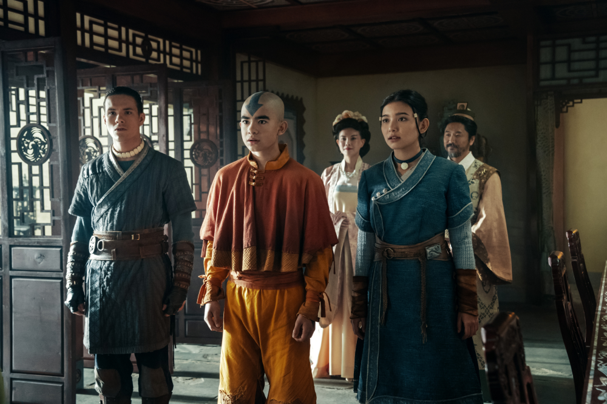

"Water. Earth. Fire. Air. Long ago, the four nations lived together in harmony."
A live-action reimagining of the beloved animated series, the story follows Aang, the young Avatar, as he learns to master the four elements (Water, Earth, Fire, and Air) to restore balance to a world threatened by the terrifying Fire Nation. Alongside his newfound friends Katara and Sokka, Aang journeys across a war-torn world while evading the relentless pursuit of exiled Crown Prince Zuko. The second season expands further into the Earth Kingdom, introducing the blind earthbending prodigy Toph and the complex politics of Ba Sing Se.